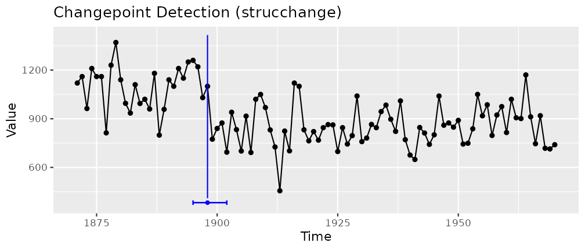

Five Packages, One Series: the Nile
Youzhi
Yu
University of Chicago
Source: vignettes/articles/nile.Rmd
nile.Rmd“Which changepoint package should I use?” is asked again and again, and usually answered in prose. This page answers it in code: five widely used changepoint packages on CRAN, run on one real series, each through its own interface and then through one.
The series is datasets::Nile, the annual flow of the
Nile at Aswan from 1871 to 1970, which ships with R. Its flow drops
around the turn of the century, and every textbook on structural change
uses it.
autoplot(cpt_detect(Nile, method = "strucchange"), show_ci = TRUE)
Each package in its own words
Five interfaces, five return types, three conventions for what “the changepoint” means:
y <- as.numeric(Nile)
# changepoint: an S4 object; cpts() is the last index of each segment
changepoint::cpts(changepoint::cpt.meanvar(y, method = "PELT"))
#> [1] 4 6 28
# strucchange: a formula, and breakpoints() with a confint() method
bp <- strucchange::breakpoints(Nile ~ 1)
bp$breakpoints
#> [1] 28
confint(bp)$confint
#> 2.5 % breakpoints 97.5 %
#> 1 25 28 32
# segmented: a fitted lm, and a breakpoint on the covariate's own scale
d <- data.frame(flow = y, year = as.numeric(time(Nile)))
segmented::segmented(lm(flow ~ year, data = d), seg.Z = ~ year)$psi
#> Initial Est. St.Err
#> psi1.year NA 1912.999 6.307558
# bcp: a posterior probability of a change at each time
set.seed(1)
which.max(bcp::bcp(y)$posterior.prob)
#> [1] 28
# ecp: a matrix in, and estimates that are the FIRST index of each segment
set.seed(1)
ecp::e.divisive(matrix(y), min.size = 2)$estimates
#> [1] 1 29 101changepoint and strucchange report the last
year of the old regime, ecp the first year of the new one,
bcp a probability per year and segmented a
point on the covariate, estimated on a continuous scale. The same
answer, observation 28 (1898), is written four ways.
The same five through one interface
calls <- c(pelt = "meanvar", strucchange = "mean", segmented = "slope",
bcp = "mean", ecp = "distribution")
fits <- Map(function(m, ci) {
suppressWarnings(cpt_detect(Nile, method = m, change_in = ci, seed = 1))
}, names(calls), calls)
do.call(rbind, lapply(names(fits), function(m) {
cp <- fits[[m]]$changepoints
data.frame(method = m, engine = fits[[m]]$versions$engine,
change_in = calls[[m]],
years = paste(cp$cp_index, collapse = ", "),
interval = if ("ci_lower" %in% names(cp)) {
paste(time(Nile)[cp$ci_lower], time(Nile)[cp$ci_upper],
sep = " to ", collapse = "; ")
} else "")
}))
#> method engine change_in years interval
#> 1 pelt changepoint meanvar 1874, 1876, 1898
#> 2 strucchange strucchange mean 1898 1895 to 1902
#> 3 segmented segmented slope 1913 1900 to 1926
#> 4 bcp bcp mean 1898
#> 5 ecp ecp distribution 1898Every result is the same ggcpt object in the same
convention (the last observation before the change), with the years
attached, so the table is one rbind() rather than five
extraction recipes.
What the table says
-
Four of five find 1898.
strucchangeadds a 95% interval, 1895 to 1902, andbcp’s posterior probability of a change peaks there too. -
peltwith a change in mean and variance finds two more, in 1874 and 1876: short segments of a few years each, which a variance model can fit closely. A change in mean alone, on the raw flows, is worse (the pitfalls article shows 42 changepoints), because the Normal cost assumes the noise has standard deviation 1. -
segmentedanswers a different question. It fits a broken line, a change in slope with the level continuous, so a step appears as a kink, here near 1913. It is the right tool for dose-response and trend breaks, and the wrong one for a level shift.
The next questions, in the same grammar
fit <- cpt_detect(Nile, method = "strucchange")
cpt_effect(fit)[, c("cp_index", "before", "after", "delta", "delta_lower",
"delta_upper", "pct_change")]
#> ggcpt_effect (method: strucchange, naive)
#> Measured where the same data located each change, so the sizes are biased upward
#> (selection_adjusted = FALSE). method = "split" measures on held-out observations.
#>
#> # A tibble: 1 × 7
#> cp_index before after delta delta_lower delta_upper pct_change
#> <dbl> <dbl> <dbl> <dbl> <dbl> <dbl> <dbl>
#> 1 1898 1098. 850. -248. -307. -189. -22.6
cpt_test_at(Nile, when = 1899)[, c("cp_index", "estimate", "p_value",
"method")]
#> ggcpt_test_at (change in mean; the location was fixed in advance, so no selection adjustment is needed)
#>
#> # A tibble: 1 × 4
#> cp_index estimate p_value method
#> <dbl> <dbl> <dbl> <chr>
#> 1 1898 -248. 7.31e-11 Welch two-sample t at a pre-specified location
cpt_assumptions(fit)
#> ggcpt_assumptions (method: strucchange)
#> residual_dependence Ljung-Box at lag 10; lag-1 autocorrelation 0.16
#> scale_sensitivity noise sd 115; this engine's answer does not depend on the units
#> expected_false_positives measured on pure noise at n = 1,000 (50 replicates)
#> count_plausibility 1 changepoints in 100 observations (1 per hundred)
#> data_type looks continuous; family gaussian
#>
#> No assumption check raised a concern.The flow fell by about a fifth. Had the date been fixed in advance
(the first Aswan dam was built between 1898 and 1902),
cpt_test_at() is an exact test with no selection to adjust
for; a test at the detected date, chosen by the same data, is not.